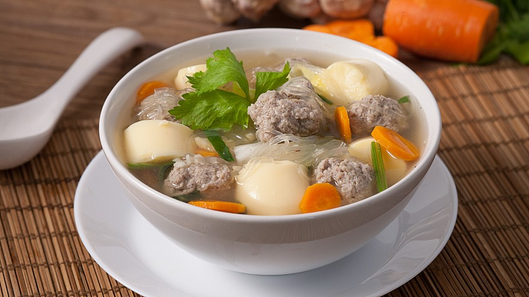

แกงจืดเต้าหู้หมูสับ

วัตถุดิบ
| ส่วนผสม |
ปริมาณ |
| หมูสับ |
300 กรัม |
| เต้าหู้ไข่ |
1 หลอด |
| คนอร์ก้อน |
1 ก้อน |
| กระเทียม |
1/2 หัว |
| แครอท |
ตามชอบ |
| ผักกาดขาว |
ตามชอบ |
| คื่นฉ่าย |
ตามชอบ |
| พริกไทยขาว |
ตามชอบ |
| ซีอิ้วขาว |
2 ช้อนชา |
| น้ำปลา |
2 ช้อนชา |
วิธีการทำ
- ผสมหมูสับ พริกไทยป่น ซีอิ๊วขาว น้ำปลา คลุกเคล้าพอเข้ากัน
- ต้มน้ำเปล่า ใส่กระเทียม คนอร์ก้อน พอเดือด ปั้นหมูสับที่หมักไว้เป็นก้อนกลมลงต้มพอสุก ใส่เกลือป่น คอยช้อนฟองออก
- ปรุงรสด้วยน้ำปลา คนให้เข้ากัน ใส่ผักกาดขาว ใส่เต้าหู้ไข่ โรยด้วนคื่นฉ่าย
- ตักใส่ชามโรยด้วยพริกไทย
ข้อมูลโภชนาการ
| ข้อมูลโภชนาการแกงจืดเต้าหู้หมูสับใส่ผัก |
| คุณค่าทางโภชนาการต่อหนึ่งหน่วยบริโภค |
พลังงานจากไขมัน 127.8 |
| ไขมันทั้งหมด 14.2 g |
22% |
| ไขมันอิ่มตัว 4.6 g |
23% |
| ไขมันไม่อิ่มตัวเชิงซ้อน 3.5 g |
| ไขมันไม่อิ่มตัวเชิงเดี่ยว 3.4 g |
| ไขมันทราน 0 g |
| คลอเรสเตอรอล 85 mg |
29% |
| โซเดียม 3579 mg |
150% |
| โพแทสเซียม 674.8 mg |
20% |
| คาร์โบไฮเดรตทั้งหมด 7.4g |
3% |
| ใยอาหาร 0.3 g |
2% |
| น้ำตาล 0.7 g |
| โปรตีน 43.8g |
88% |
กลับหน้าหลัก